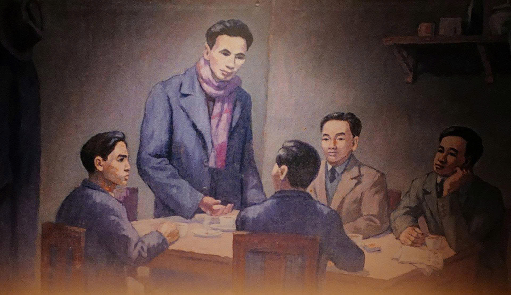
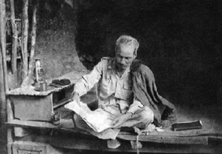
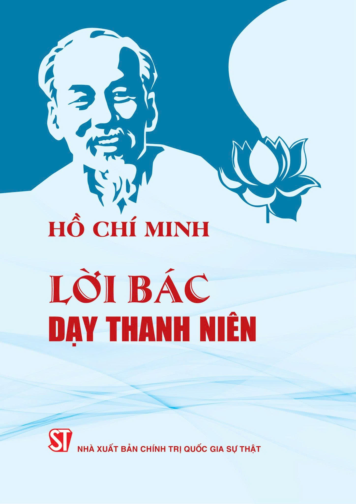
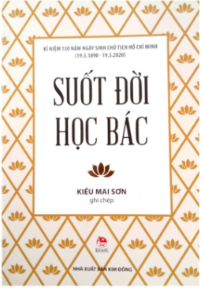

Lời Dạy Của Chủ Tịch Hồ Chí Minh
Thành công, thành công, đại thành công."
Hành Trình Vĩ Đại Của Bác
19/05/1890
Nguyễn Sinh Cung sinh tại Làng Sen, xã Kim Liên, huyện Nam Đàn, tỉnh Nghệ An.

Nguồn: Khu di tích Kim Liên
05/06/1911
Nguyễn Tất Thành rời bến cảng Nhà Rồng trên con tàu Amiral Latouche Tréville, bắt đầu hành trình vạn dặm tìm đường cứu nước.

Nguồn: Bảo tàng Hồ Chí Minh
03/02/1930
Nguyễn Ái Quốc chủ trì Hội nghị hợp nhất các tổ chức cộng sản, thành lập Đảng Cộng sản Việt Nam tại Hương Cảng (Trung Quốc).

Nguồn: Bảo tàng Lịch sử Quốc gia
28/01/1941
Sau 30 năm bôn ba hoạt động ở nước ngoài, Người trở về Tổ quốc trực tiếp lãnh đạo cách mạng Việt Nam tại hang Pác Bó, Cao Bằng.

Nguồn: TTXVN
02/09/1945
Tại Quảng trường Ba Đình lịch sử, Chủ tịch Hồ Chí Minh đọc Tuyên ngôn Độc lập, khai sinh ra nước Việt Nam Dân chủ Cộng hòa.

Nguồn: TTXVN
07/05/1954
Dưới sự lãnh đạo của Đảng và Bác Hồ, quân và dân ta làm nên chiến thắng Điện Biên Phủ "lừng lẫy năm châu, chấn động địa cầu".

Nguồn: TTXVN
02/09/1969
Chủ tịch Hồ Chí Minh muôn vàn kính yêu qua đời, để lại bản Di chúc thiêng liêng - tài sản tinh thần vô giá cho toàn Đảng, toàn dân.

Nguồn: TTXVN
Tác Phẩm Vượt Thời Gian
Không Gian Sách Trực Tuyến

Búp Sen Xanh
Tiểu thuyết lịch sử của nhà văn Sơn Tùng, viết về tuổi thơ và thời thanh niên của Bác Hồ.
📖 Đọc Sách Flipbook
Một Cốt Cách Văn Hóa
Tác phẩm của tác giả Lê Đình Cúc, khắc họa vẻ đẹp nhân cách, tâm hồn Bác Hồ.
📖 Đọc Sách Flipbook
Bác Hồ Với Thanh Niên
Tuyển tập những bức thư, bài nói chuyện của Bác dặn dò thế hệ thanh niên Việt Nam.
📖 Đọc Sách Flipbook
Suốt Đời Học Bác
Cuốn sách tập hợp những mẩu chuyện cảm động về tấm gương đạo đức Hồ Chí Minh.
📖 Đọc Sách FlipbookCác Ca Khúc Hát Về Chủ Tịch Hồ Chí Minh
Bác Hồ Một Tình Yêu Bao La
Sáng tác: Thuận Yến
Như Có Bác Trong Ngày Đại Thắng
Sáng tác: Phạm Tuyên
Hồ Chí Minh Đẹp Nhất Tên Người
Sáng tác: Trần Kiết Tường
Tiếng Hát Từ Thành Phố Mang Tên Người
Sáng tác: Cao Việt Bách
Lời Bác Dặn Trước Lúc Đi Xa
Sáng tác: Trần Hoàn
Bác Đang Cùng Chúng Cháu Hành Quân
Sáng tác: Huy Thục
Thư Viện Hình Ảnh Tư Liệu
Nguồn ảnh tư liệu: Thông tấn xã Việt Nam & Bảo tàng Hồ Chí Minh